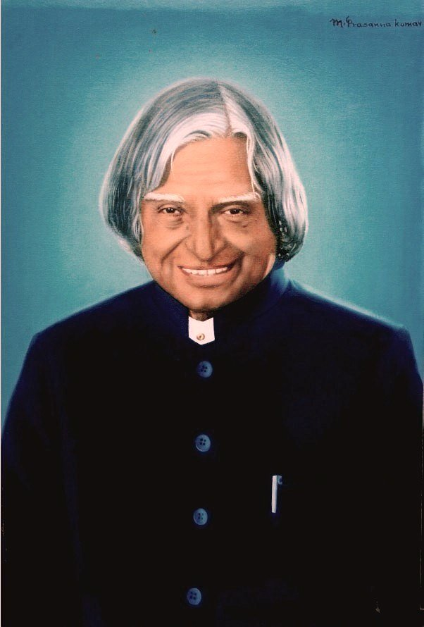

Avul Pakir Jainulabdeen Abdul Kalam was born on 15 October 1931 in Rameswaram, Tamil Nadu, into a modest family. Despite financial hardships in his early years, he pursued his passion for science and aeronautics, eventually studying physics and aerospace engineering.
He played a pivotal role in India's space and missile programs, working with the Indian Space Research Organisation (ISRO) and the Defence Research and Development Organisation (DRDO). His contributions to the development of India's ballistic missile and space rocket technology earned him the title "Missile Man of India."
In 2002, Dr. Kalam was elected as the 11th President of India, a role he embraced with humility and a deep commitment to inspiring the nation's youth. Known as the "People's President," he remained approachable and dedicated to education even after leaving office, spending his final years teaching and interacting with students across the country.
"Dream is not that which you see while sleeping, it is something that does not let you sleep."